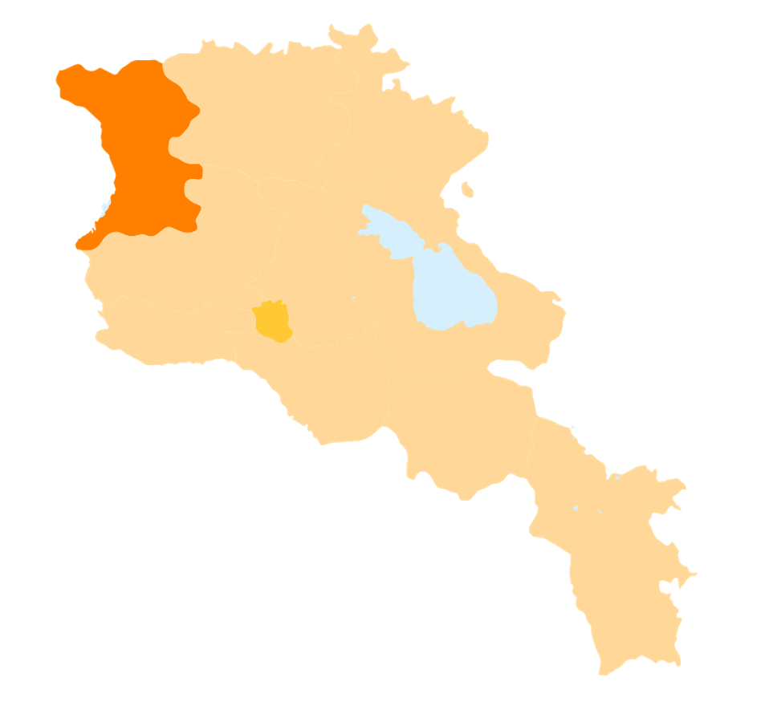

Հետ գնալ
Շիրակի մարզ
Շիրակի մարզ, մարզի կարգավիճակ ունեցող վարչատարածքային
միավոր Հայաստանում։ Վարչական կենտրոնը Գյումրի քաղաքն է։
Պետական սահմանով արևմուտքից սահմանակից է Թուրքիային, հյուսիսից՝ Վրաստանին, արևելքից սահմանակից է՝ Հայաստանի Լոռու
մարզին և հարավից՝
Հայաստանի Արագածոտնի մարզին։ Գտնվում է Հայ Առաքելական Եկեղեցու Շիրակի թեմի հովվապետության ներքո (առաջնորդարանը՝
քաղաք Գյումրիում),
սակայն մարզի տարածքում կան զգալի թվով կաթոլիկ հայեր, ինչպես նաև կաթոլիկ գյուղեր։
Շիրակի մարզի քաղաքային համայնքների թիվը 3 է՝
Շիրակի մարզի տարածաշրջաններն են՝
- Ախուրյան
- Անի
- Արթիկ
- Ամասիա
- Աշոցք